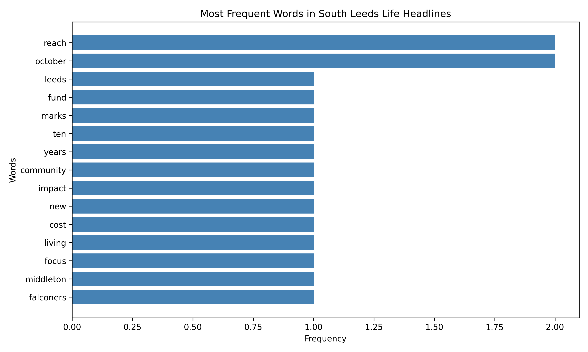
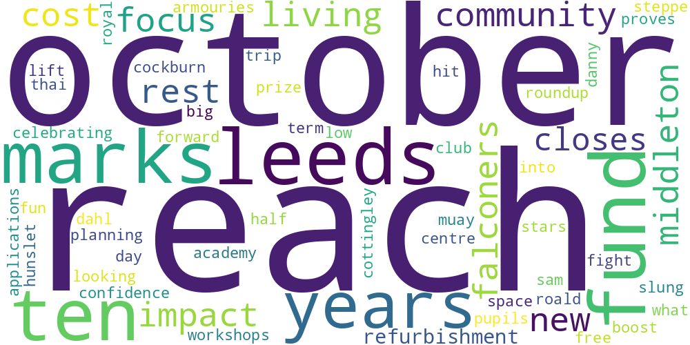
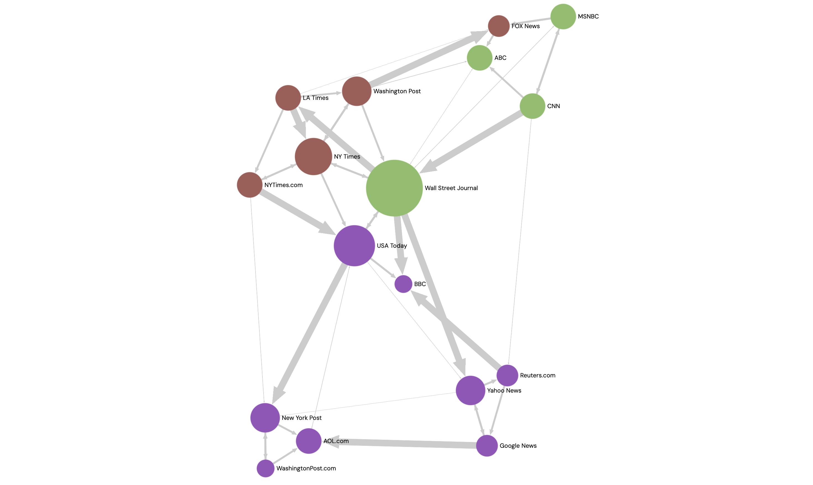

This week, I explored how Python and network visualisation tools can be used to analyse data. I worked with news headlines from South Leeds Life and explored a media network using Gephi Lite.
I analysed ten news headlines collected from South Leeds Life. I used Python to count word frequencies and visualise the results.


The word frequency chart shows that "reach" and "october" appeared twice, while most other words appeared only once. The word cloud makes these repeated words easier to notice. However, word frequency alone cannot explain the meaning or context of the news stories. As I only analysed ten headlines, the results are also limited.
I used Gephi Lite to explore a media network. Nodes represent media organisations, while directed edges represent connections between them.

I used degree to compare how many connections each media organisation had. Larger nodes represent organisations with more connections. I also used Louvain community detection to identify three groups, shown in different colours. However, these groups only reflect patterns in the network data and do not necessarily represent the organisations' political views or relationships outside the dataset.
The text analysis results are available below.
Download Text Analysis Results (CSV)